Latest
Public review log across all games · 5-breather cohort · github
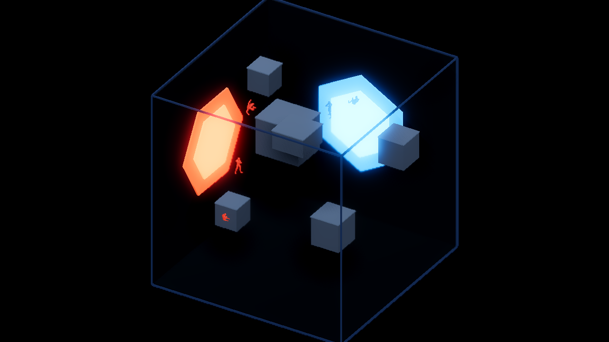
Phase 1 v5 — scale + poses corrected. Soldier scale 0.55 → 0.22 so a figure is ~40cm tall, ≈1/10 the cube height, well below the star-block obstacles — matches the book where "stars" are room-sized cover and soldiers are small against them. Enumerated the Quaternius UAL glb (45 anims) and assigned combat-appropriate poses frozen via AnimationPlayer.play + advance(t) + pause(): Blue team — Pistol_Aim_Neutral, Swim_Fwd, Roll (pushing inward from their gate). Red team — Pistol_Shoot, Jump_Start, Crouch_Fwd (defensive return fire from around the stars). No more T-poses.
Review questions
Phase 1 v4 — soldiers in the room. Six Quaternius Universal Animation Library figures (CC0) dropped in from /Users/jamis/Downloads/Universal Animation Library[Standard]/Unreal-Godot/UAL1_Standard.glb, copied into experiments/enders-game/cube-scifi/assets/soldier.glb. Three per team, positioned near each team's gate with random tumble rotations to sell zero-G. Materials overridden to emissive flash-suit colors (blue #3895ff, red #ff5139) via recursive MeshInstance3D override. No animation playing — figures are in T-pose, which accidentally reads fine for "arms-out zero-G floating" but feels static. Scale 0.55 so a soldier is ~10% of the cube height, matching book proportions.
Review questions
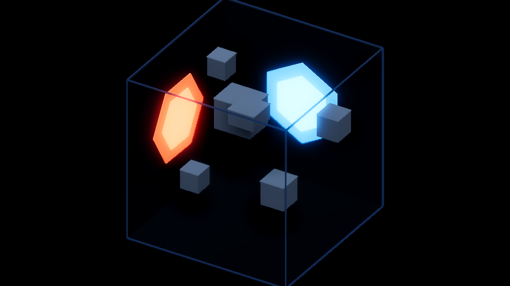
Phase 1 v3 — god-view orbit camera + barely-there edges. Edge trim color darkened from #475d8c to #2a3852, emission energy from 0.6 → 0.20, thickness from 0.06 → 0.035m. Edges now read as a ghosted silhouette outline, not a glowing wireframe. Left-mouse drag orbits around the cube center (yaw/pitch), mouse wheel zooms (4–14 ortho units). Pitch clamped to avoid flipping upside-down. Initial pose slightly different angle so you can see both gates at once.
Review questions
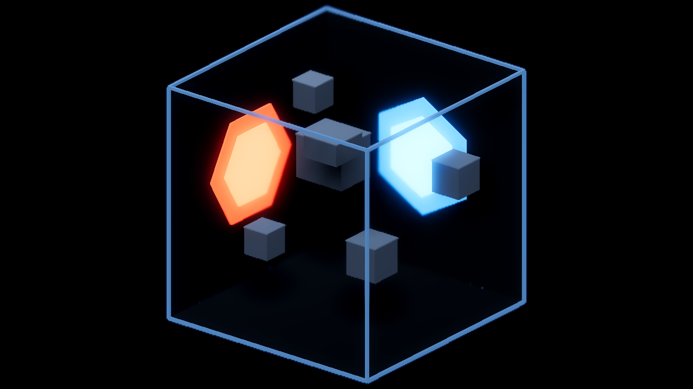
Phase 1 redo — book-accurate Battle Room. All-black void, cube viewed as a dollhouse cutaway (front + ceiling + right wall removed so the camera sees straight in). Interior: six gray "stars" — the book's term for the large floating obstacle blocks soldiers hide behind and push off, not literal stars. Two hex gates flush with opposite walls, one per team: blue on the back (-Z), red on the left (-X). Faint cool-steel emissive trim on every cube edge so the shape still reads where the walls are absent. First toybox + first sci-fi direction both dropped — this is the new direction.
Review questions
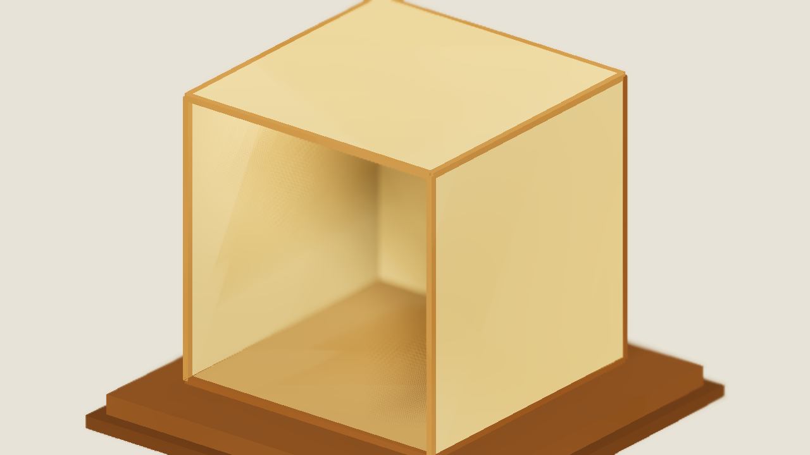
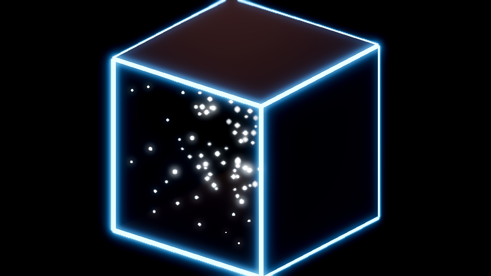
Phase 1 of the Ender's Game Battle Room commission — empty cube, two aesthetics side by side. Same geometry (4m cube, open front, 5 walls + 12 edge frames), same camera pose (ortho ~35° tilt), only the mood differs. Left — Toybox: warm tungsten key + interior bulb, oak frame, wooden pedestal, cream backdrop, tilt-shift DOF. Reads as "curio cabinet miniature." Right — Sci-fi: dark walls, cyan emissive edge seams, 160 bloomed stars scattered inside, cold blue key + warm rim, strong glow. Reads as "cube-shaped window into deep space." No soldiers yet by design — the cube has to hold the room on its own before we add figurines.
Review questions
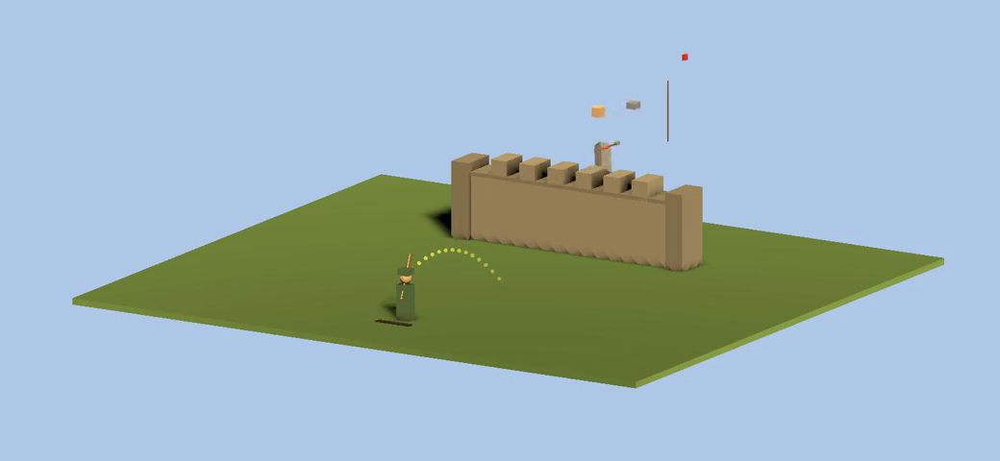
experiments/archer-aim — first manually-controlled unit. W/S aim angle (5°–75°), hold Space to charge bow (POWER_MIN→POWER_MAX, ~0.8s for full draw, bowstring pulls back, power bar fills), release to fire. Arrow arcs under gravity. Trajectory preview shows 14 ghost dots updating live as you aim. Defender body parts (torso/head/helmet/red plume/pike) are pre-built RigidBody3Ds frozen until hit — on impact they unfreeze and ragdoll with the arrow's velocity + jitter. The plume gives the defender visual punch on the wall.
Review questions
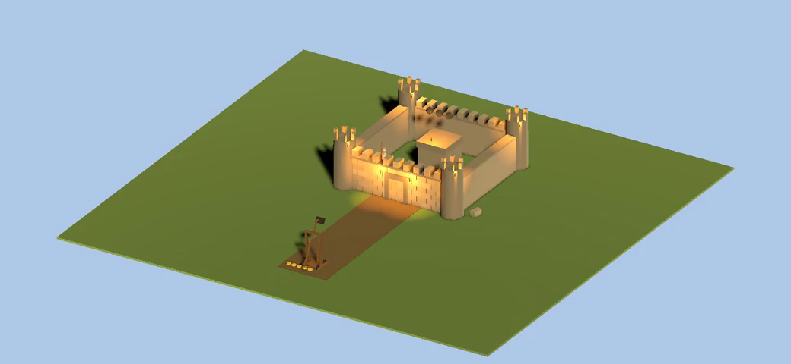
Week 4 polish. R restarts from VICTORY (replay the level). Steel-armoured defender paces the front wall walkway forever — pure visual life, no gameplay yet. Audio + itch.io export deferred to a later session. The level loop is now complete: assign → fire → breach → soldiers in → stars → restart.
Review questions
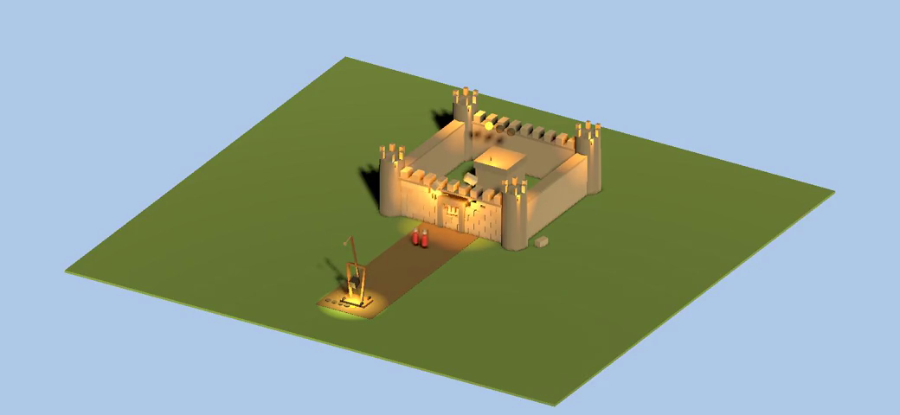
Level 1 redesigned per spec. 5-coin budget, pre-turn assignment phase. Press 1 for trebuchet (2 coins), 2 for soldier (1 coin, max 3), Space starts the turn. Trebuchet glows when assigned. Soldiers walk in red tunics with steel helmets and spears. Wall blocks them until breached, then they pass through. ★1 = breach. ★2 = soldier inside. ★3 deferred. Stars float above the keep, light up when earned.
Review questions
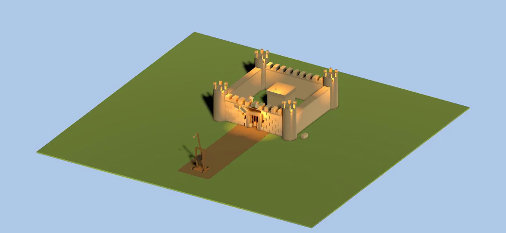
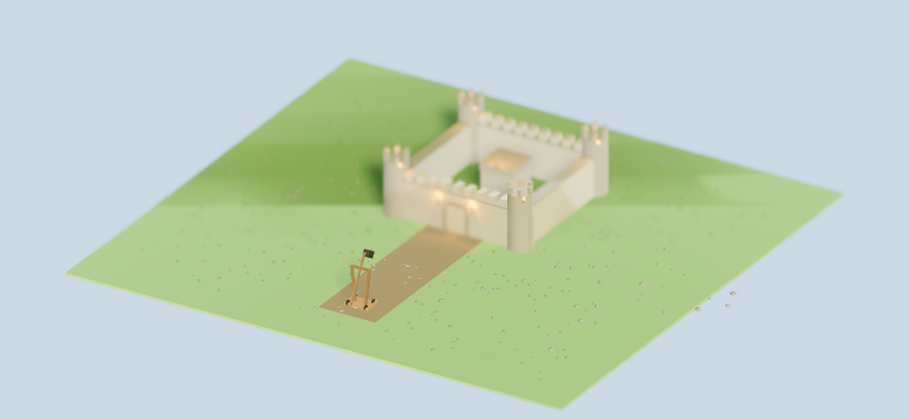
Left: GL Compatibility (current). Right: Forward+ with full stack — SDFGI global illumination (bounce light inside courtyard), SSAO (towers grounded), Glow (torch bloom), ACES tonemap (filmic contrast), DOF (subtle miniature hint), MultiMesh ground scatter (rocks + grass tufts). Same geometry, same GDScript. Renderer switch + ~60 lines of Environment config.
Review questions
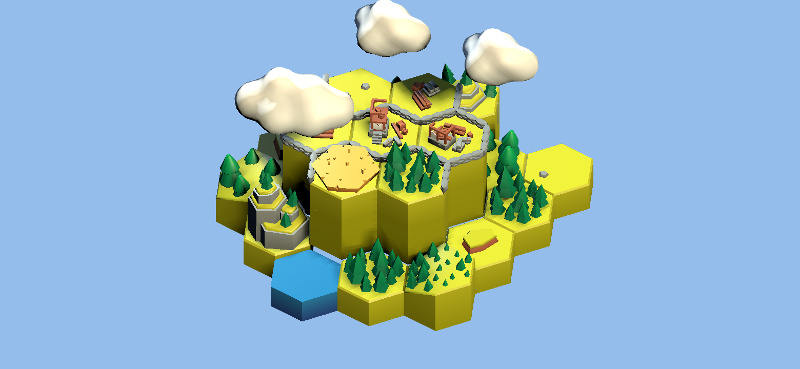
Properly assembled for the first time. Guide rules applied: one building per tile with rotation variation, fence_stone_straight snapped to each hex edge by rotating in 60° increments (18 segments, complete perimeter ring), hex_grass_bottom scaled in Y to make a 1.5-unit cliff face, mountains placed directly without grass underneath (they carry their own base). Outer terrain uses sloped/water tiles at correct positions, no double-stacking.
Review questions
wall_straight pieces, or is the fence height right?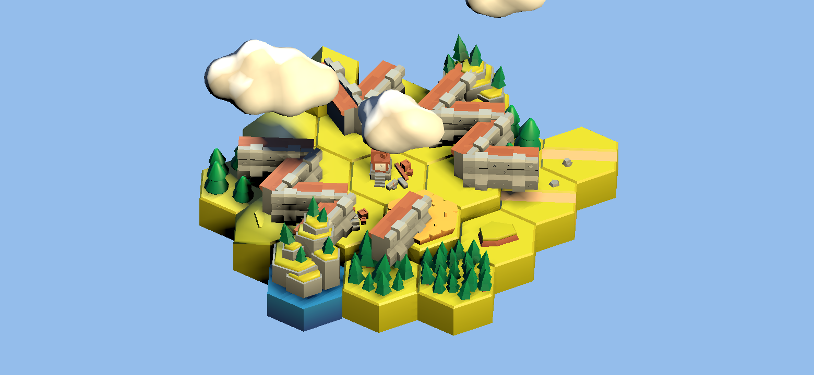
KayKit Medieval Hexagon Pack — first light. Pointy-top hex grid, 3-ring layout: raised central plateau with castle stage buildings and perimeter walls, outer ring of grass/slope/water tiles, trees and mountains on far hexes, clouds above. Warm directional + cool fill lighting. Orthographic diorama camera. This is a visual probe only — no logic, just checking whether the pack reads as a siege setting.
Review questions
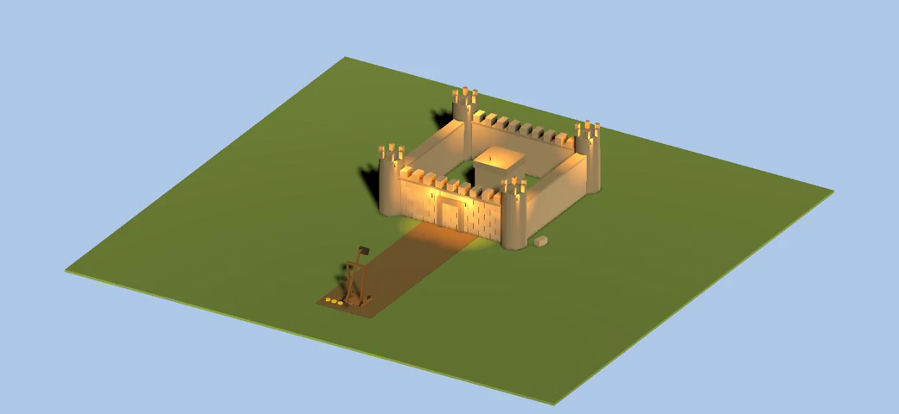
Week 3 done. Game loop: 3 in-world gold coins beside trebuchet → press Space → spend 1 coin (greys out) → trebuchet fires → rock arcs → wall breach → WIN state holds on scene. Space is the only input. No HUD.
Review questions
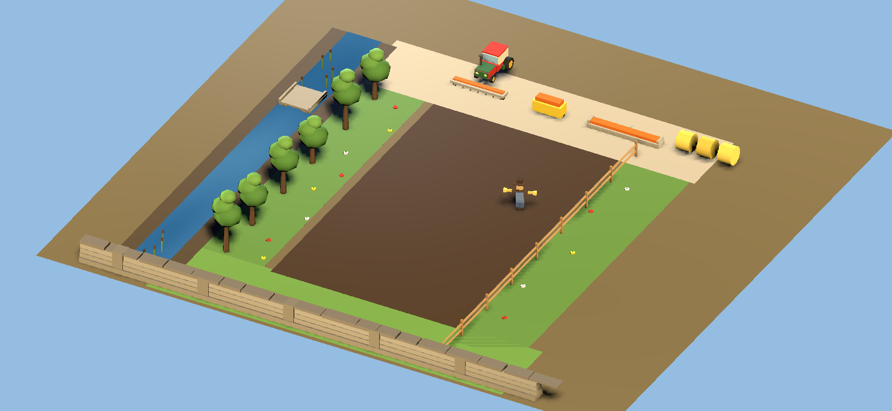
Creek water now ripples (spatial shader, streaming downstream — visible in play, not in this still). Stone curtain wall runs across the far headland with irregular capstones and anchor blocks. Scarecrow stands mid-field with burlap head, wide hat, jacket, trousers, and straw hands.
Review questions
Trebuchet moved to z=+20 (was z=+12), 14.5m clear field between machine and gate. Camera pulled back to frame both. LAUNCH_V retuned for the longer 17m throw.
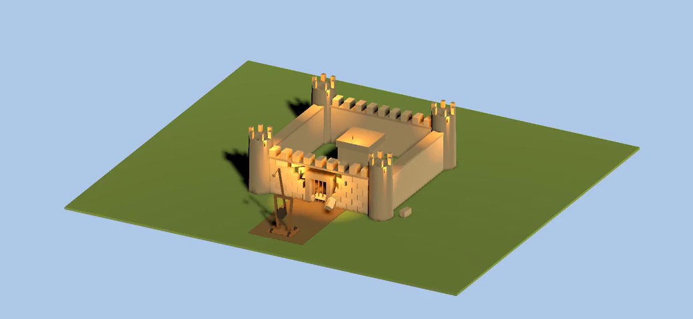
Week 2 done. Full loop live in the commissioned Siege game: trebuchet arm swings → rock arcs 9m → hits front wall → breach opens → bricks scatter → wall rebuilds → repeats. Towers, side walls, keep untouched. Week 3 next: gold counter + assign mechanic.
Review questions
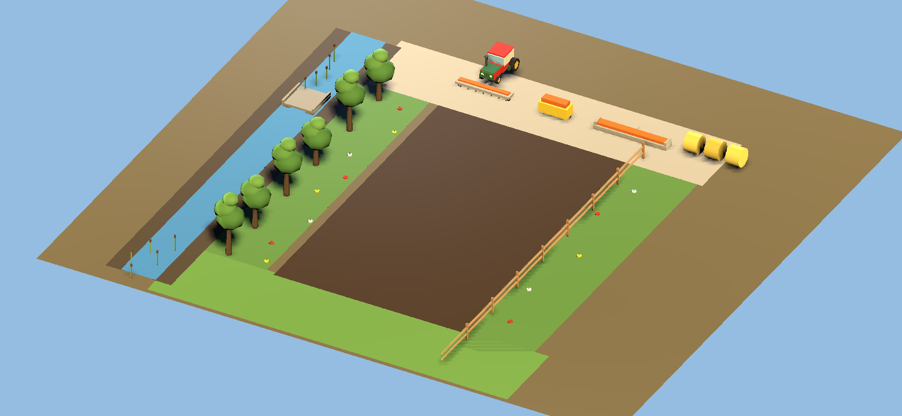
Added a creek running the full left edge of the field. Stone footbridge with parapets crosses near the barn end. Cattail reeds cluster at both ends of the water. Muddy banks frame the water channel.
Review questions
Siege is commissioned. Full castle: 4 connected walls, 4 corner towers, portcullis gate, interior keep. Trebuchet parked outside front wall (cocked). Torches on all towers + gate, flickering. Locked low-poly aesthetic from experiments. Week 2: trebuchet fires, arc, breach.
Review questions
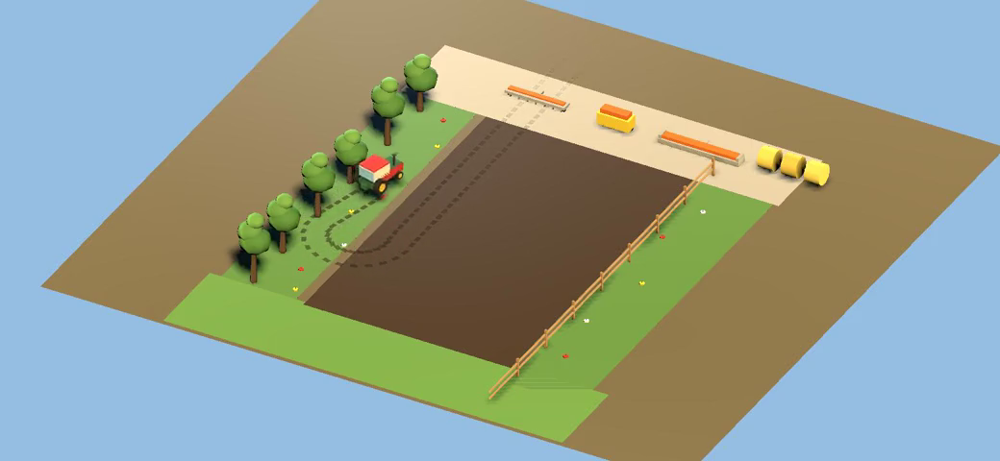
Phase 4: reverse to the cultivator, press E to snap it on ([ E ] Attach label floats in range), Space to raise/lower, cultivate, press E again to drop it back. The parked implement stays wherever you leave it.
Review questions
Physics locked. BLAST_STRENGTH=6.5, radius=1.7m, brick mass=1.2kg. Clear breach hole, ~8-10 bricks scatter outward, lower rows stay in place. Masonry feel, not cartoon.
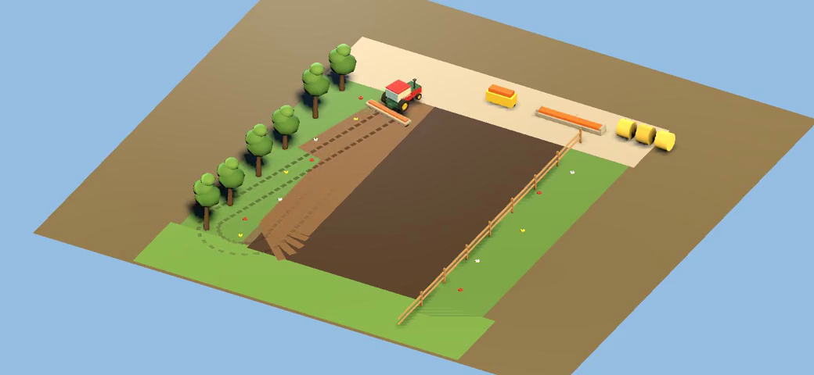
Phase 3: cultivator is attached to the tractor hitch. Press Space to lower/raise — tines stamp lighter cultivated-soil patches as you drive. Raise it and the field freezes; lower it again and you keep going. The field remembers where you've been.
Review questions
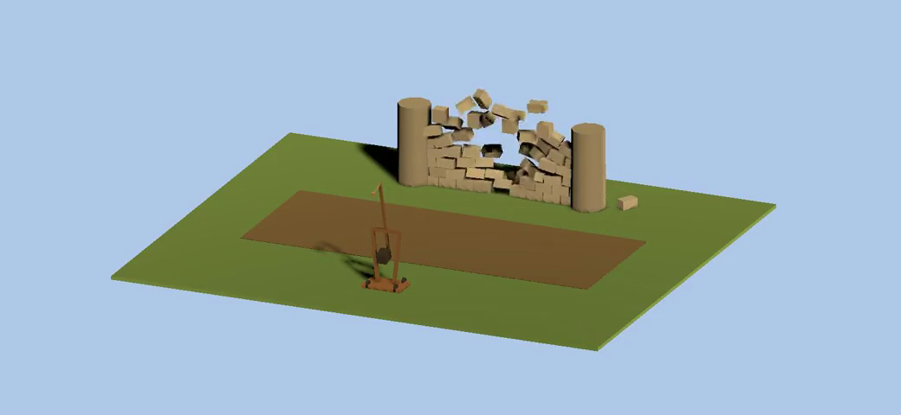
Dialled back from v2: blast strength 32→12, radius 2.8→2.2m, brick mass 0.2→0.55kg, upward bias reduced. Result: clear breach hole in centre, bricks tumble forward not skyward, lower rows survive. Feels like masonry, not a cartoon bomb.
Review questions
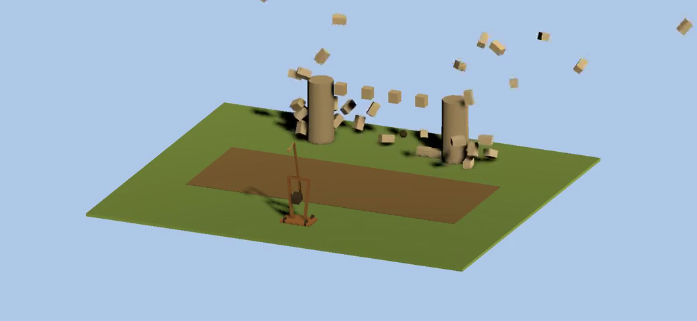
Fixed: switched from contact-propagation to a manual radial blast impulse (BLAST_STRENGTH=32, radius=2.8m) triggered when rock crosses the wall plane. Bricks mass reduced 0.8→0.2kg, damping near-zero. Upward bias (+0.5 Y) makes bricks fly UP as well as out. Towers survive; wall section explodes.
Review questions
Full loop working: trebuchet cocks → CW drops → rock arcs 18m → smashes RigidBody3D brick wall (9×6 staggered blocks) → bricks scatter under physics → wall rebuilds for next shot. Rock mass 10kg vs brick mass 0.8kg gives satisfying scatter. Wall resets each cycle.
Review questions
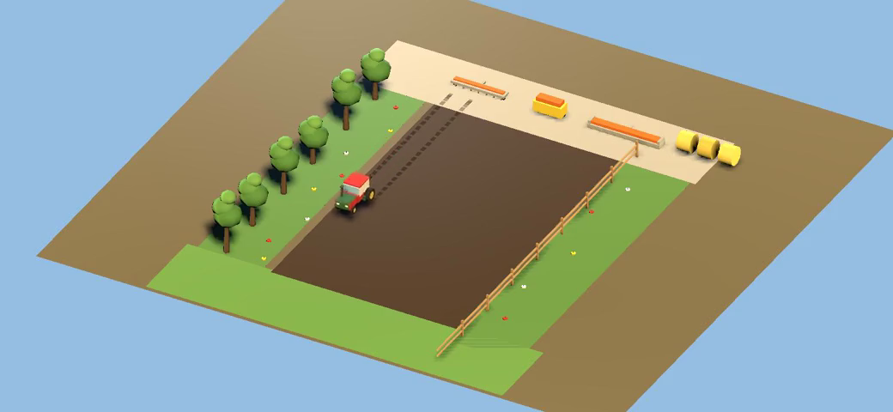
Phase 2: tractor is now drivable (WASD). Drives up the left row, wide U-turn at the far end, returns down the centre. Fading tire track marks stamp behind the rear axle. Body roll on turns. Autopilot sequence — keyboard input works as usual.
Review questions
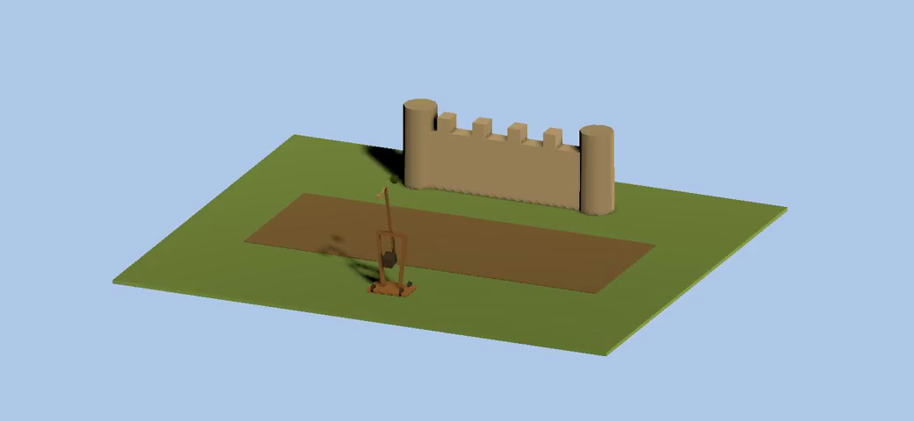
Corrected trebuchet orientation: CW (dark box) now faces the wall and drops first, sling swings up and over from behind. Rock launches at ~23° past vertical and arcs ~18m to hit the wall face. Trebuchet and wall at opposite ends of the field.
Review questions
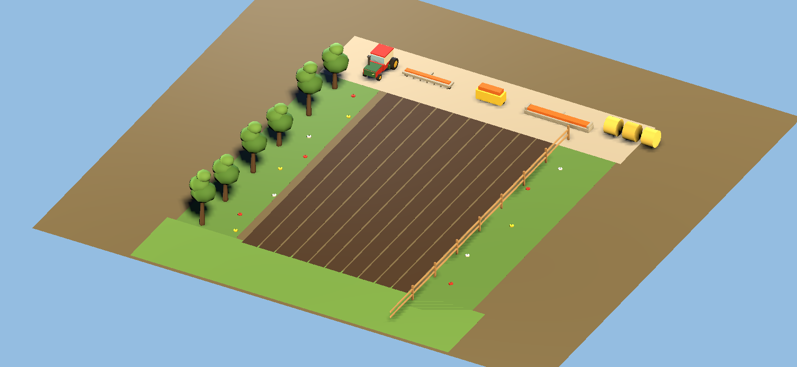
Scene v2: switched to zen-smash 3/4 diorama camera angle. Added trees along left edge, post-and-rail fence along right, hay bales at barn end, wildflowers in grass borders. Field is now 10 rows × 16m — clearly rectangular.
Review questions
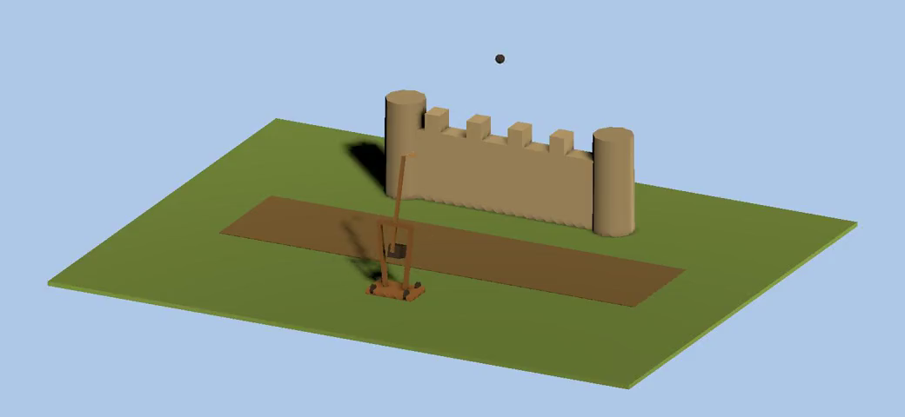
Trebuchet arm animates on a state-machine loop: windup → swing (cubic ease-in) → rock launches at release angle → arcs under gravity → resets. Two full cycles in ~11 seconds. Rock is a RigidBody3D with manual gravity applied in _process.
Review questions
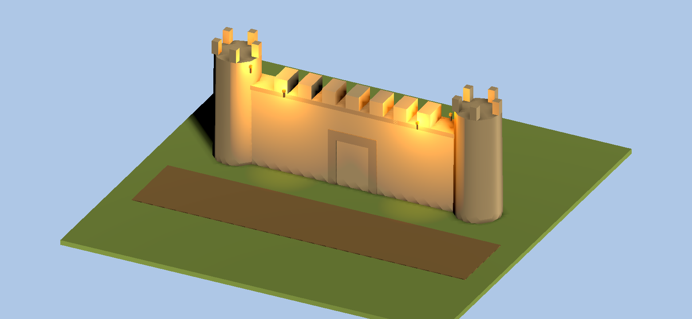
Aesthetic direction locked: low-poly. Afternoon sun, blue sky, stone colour reads clearly, torch glow on wall face. Next: trebuchet arm experiment.
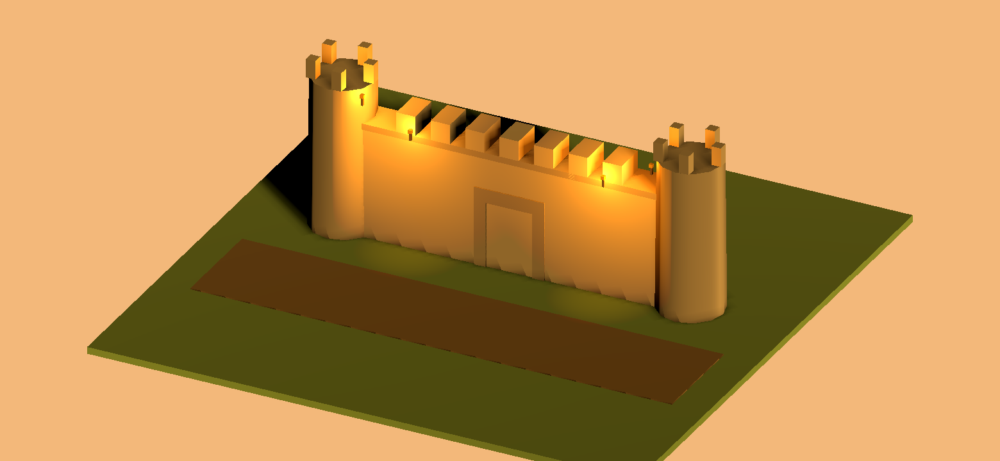
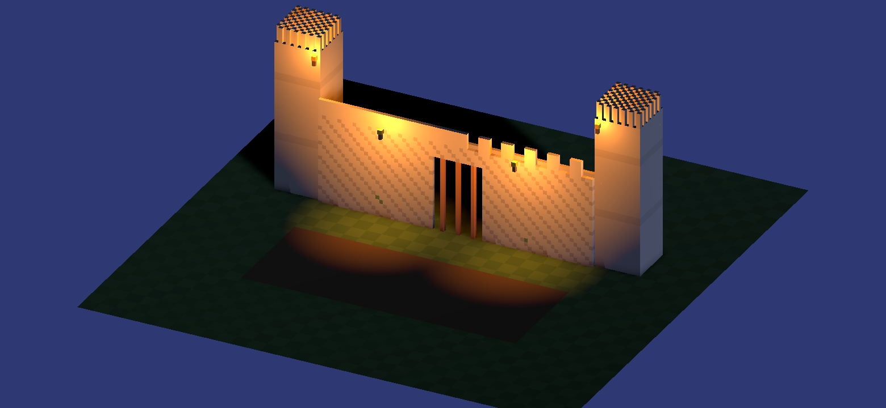
Left: low-poly, golden hour. Sun low and amber, warm sky, torches on towers and wall walkway. Right: voxel, blue dusk. Sun nearly set, cool blue ambient, torches do the heavy lifting. Voxel size reduced to 0.125m (1/4 of original) — fine grid visible on wall face.
Review questions
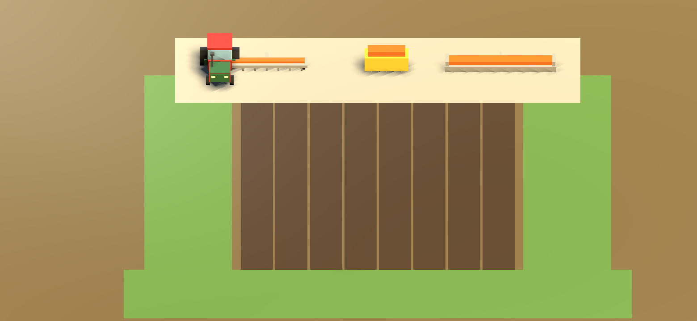
First static scene for Zen Farm: 8 dark soil rows, concrete barn pad with three parked implements (cultivator, seed drill, combine head), and red tractor. Commission gate 1 — aesthetics review before adding tractor movement.
Review questions
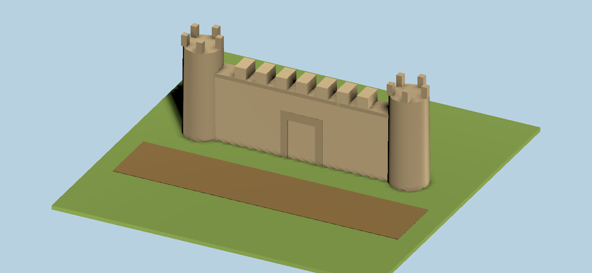
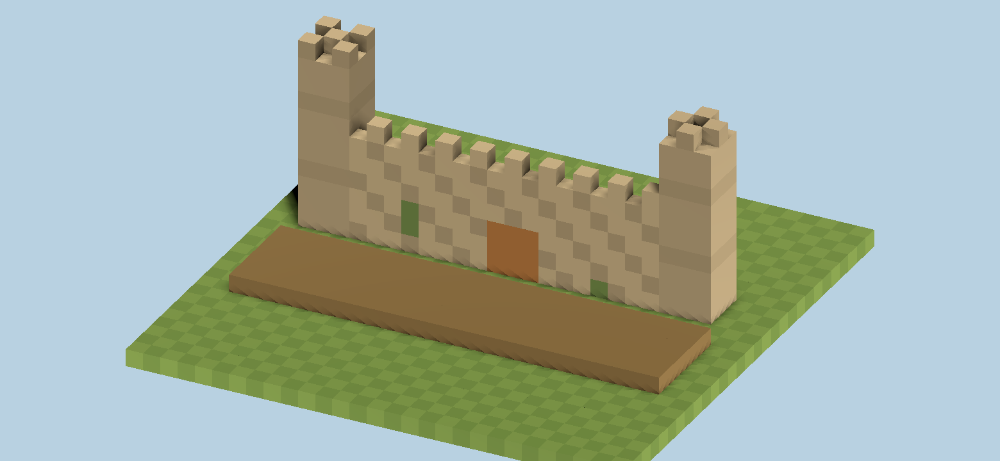
Left: low-poly. Smooth slab wall, CylinderMesh round towers, arch gate. Reads like Tiny Glade / Mini Motorways. Right: voxel. 0.5m unit cubes, checker grass, square towers. Reads like a cozy toy set — destruction looks more satisfying on blocky things.
Review questions
Your feedback: "Can the sand accumulate in front of the blade as it's pushing?" ✓
The fix — scrape and deposit zones now form a conveyor belt:
Watch the mid-scene mound form around t=5s — that's entirely the dozer's work. When the dozer turns and drives away, the pile persists.
Review
The thesis, closed: change the environment → environment becomes the new reality to drive on.
What's working:
heights PackedFloat32Array feeds both the visual mesh and the HeightMapShape3D collision. Both rebuild on a dirty-flag at end of each tick. So when you push dirt, the physics sees the new shape — the dozer then drives over its own work correctly, tracks climb + tilt adapts to the new normal.Demo: 2.5s settle → blade down, drive forward carving a trench and pushing a pile → release blade → 180° turn → drive back over the carved/piled area. Compare the terrain behind the dozer at t=2 vs. t=12.
Review
ideas/), or build another experiment first?Your feedback: "Dozer was floating a bit. It should sink into the sand more, especially on mounds." ✓
Two small changes:
-0.09 on Y relative to the physics body, so the bottom of the tracks always presses slightly into the terrain. Reads as "dozer is heavy, dirt gives a little" — the sand quality you were describing.Purely cosmetic — the physics doesn't change, the dozer just reads as planted in the ground instead of hovering above it.
Review
VISUAL_SINK, currently -0.09m.)Your feedback: "We went too far. Turning isn't smooth anymore and driving feels weird. Less aggressive pitching." ✓
The Phase 1b problem (now reverted): I was slerping the entire physics body basis each frame toward the terrain normal. That meant yaw (your turn input) was also being smoothed — every frame, the tilt lerp was dragging the yaw back toward a previous sample. On top of that, the tilted collider intersected the ground, so I had to hard-snap Y, which replaced gravity and made the motion feel synthetic.
The redesign — separate physics from visual:
is_on_floor + move_and_slide work exactly like before any tilt existed. Turning is back to instant/smooth.Node3D child instead of the body directly. That child gets a pitch-and-roll-only basis each frame.Net result: controls feel like flat-ground driving, but the dozer visibly leans into slopes. Visual tilt is subtle by design — readable without being bouncy.
Review
NORMAL_LERP, currently 6/sec.)Your ask: "Mounds of dirt. The dozer can shift dirt and change the platform/ground. You make a ramp, then drive over it." Change the environment → the environment becomes the new reality to drive on.
Phase 1 (this clip) proves the foundation: non-flat terrain that the dozer can actually drive on. The ground is a 33×33 heightmap with procedural rolling hills, a visible mound (back-right) and a dip (front-left). Dozer uses gravity + a floor_max_angle of 55° so it can climb moderate slopes. Edge walls keep it on the map.
What's already working:
SurfaceTool builds the visual mesh from the heights array (auto-normals)HeightMapShape3D gives pixel-perfect collision — dozer tracks the surfaceheights: PackedFloat32Array drives both visual and collision → a single source of truth for Phase 2 deformationPhase 2 (next, if this feels right): dozer blade collision modifies heights in a radius, mesh + collision both regenerate each frame the blade is engaged. "Push dirt into a ramp, then drive over the ramp." That's the actual vibe you described.
Review
Scene is now a proper toy room. Four new structure types added (each cozy, each physics-distinct):
Plus the OG three (brick wall, log cabin, stone tower) — retained for contrast. Total physics bodies: ~100, still comfortable on M4.
Demo visits hay → dominos → snowmen → cardboard in a 24-sec tour. Sound + dominos cascade + bowled snowmen = the moments to watch.
Review
Sound has audio now. 🔊 Click the thumbnail to open in the lightbox — audio plays there (thumbnail preview stays silent).
All three sounds are procedurally generated in GDScript (no downloads, no licensing): raw PCM sample buffers converted to AudioStreamWAV. Placeholders until Jamis sources real CC0 sounds — easy to swap later.
Mark any of the three you don't like and I'll either re-tune the procedural version OR swap for a specific freesound.org CC0 clip.
Review
Studio news: the doze-smash experiment has been promoted to an official commission. experiments/doze-smash/ lives on as the prototype; the real game now lives at zen-smash/ (its own git repo at github.com/tiny-game-dev-studio/zen-smash), with .brain submodule wired in and commission written.
Big business decision: Zen Smash ships free. Sampler role — it's the handshake with the audience, top-of-funnel for whatever breathers come after. No IAP, no ads. Voice consistency > monetization on this one.
Ship order change: Zen Smash is now Breather #1. Sandhaul is PAUSED (not killed) — it'll resume after Zen Smash ships. Reason: zen-smash was satisfying on first play, Sandhaul had been a longer grind. Ship-muscle ethos says pick the clearer winner.
Next up (per commission week plan):
Experiment #3: experiments/doze-smash/. Same dozer from sand-push, now aimed at destructible structures: a red brick wall (40 loose bricks, offset-stacked), a wooden log cabin (10 stacked logs, cylinders), and a tall grey stone tower (12 stacked blocks, slightly jittered so it's tippy).
Physics approach: every brick / log / block is a RigidBody3D with can_sleep=true (still bodies skip physics work). Dozer applies speed-scaled impulse on contact — no scripted knockdowns, just real physics. All 62 pieces share collision layer 1; bricks/logs/blocks collide with each other AND the ground AND the dozer.
Demo video shows the 20-sec autopilot run: turn-left-charge-brick → reverse-turn-right-charge-cabin → turn-left-charge-tower → victory lap. Play at experiments/doze-smash/project.godot to drive into them yourself (WASD or arrows).
The real question
game-demolition idea, or does it feel thin without dynamite?Demo reel for the sand-push experiment. Same /demo-reel skill (scripted keyboard input autopilot, Godot Movie Mode). 18-sec sequence shows the dozer driving forward into the ball pile, reversing, turning, shoving more balls across the canvas, and the tread tracks fading behind it. The poster frame captures the dozer mid-route with a visible trail of dark tire marks — proof the tracks-with-fade work as intended.
Play live at experiments/sand-push/project.godot (WASD + arrow keys). Autopilot is scrubbed from the project after recording — your keyboard works normally.
Fairness fixes (your Day 4e feedback classified as blocking bugs, not vibe):
continuous_cd=true to prevent physics tunneling at fast arm movements.Demo reel re-recorded via /demo-reel autopilot. Same 18-sec sequence as before (dig / swing / pour / repeat) but now the scoop actually digs into the pit and the bucket holds the load.
Honest evaluation
experiments/backhoe-scoop/project.godot — does it FEEL satisfying, or is it still flat?Self-demo, scripted autopilot (since I can't play live during Movie Mode recording). A demo_autopilot.gd autoload synthesizes keyboard actions via Input.action_press/release on a timed script — main.gd sees the same input events it would from a human player. 18-sec sequence:
Fixes bundled: moved backhoe closer to pile (was 3.4u out of reach), tuned arm geometry + pitch range so the bucket dips to ground level without clipping, reframed camera to show both backhoe and pile.
Play it yourself at experiments/backhoe-scoop/project.godot — autopilot only runs in Movie Mode recording; normal playback uses your keyboard input.
Review questions
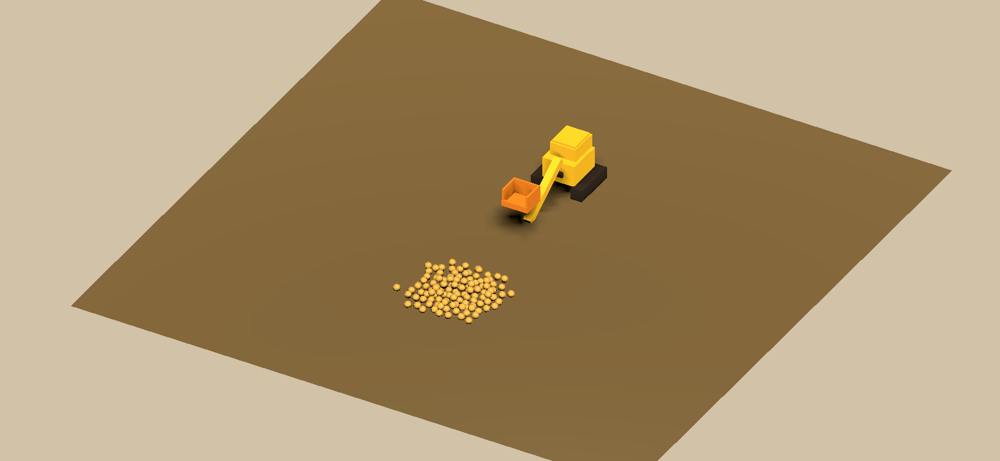
New experiment #2: experiments/backhoe-scoop/. Stationary backhoe with a 3-DOF articulated arm and a hollow AnimatableBody3D bucket. 120 small sand balls (radius 0.08, mass 0.055) — chunky gravel scale. Validates the scoop mechanic before adding a truck in Phase 2.
Controls (all keyboard):
A / D or ← / →: swing arm left/right (aim)W / S or ↑ / ↓: raise / lower arm (dig)Space (hold): tip bucket forward to dump; release to levelThe bucket auto-stays-level as you raise and lower the arm (so scooped balls don't fall out) — space-bar overrides that to pour. Open at top + front; walls on back + sides + floor + low front lip so balls stay in during transport.
To try it: experiments/backhoe-scoop/project.godot. Lower the bucket into the pile, lift, swing to aim, hold Space to pour.
The real question (answer after playing)
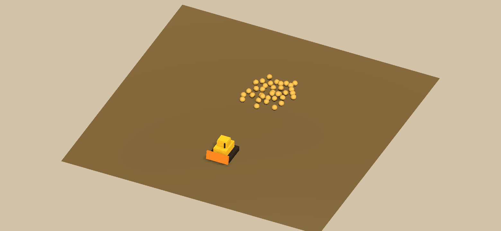
Four fixes shipped (Medium, ~35 min):
Can't demo push/tracks/falling in a no-input MP4. Run locally and shove the pile toward an edge — balls should fall off, dozer should stop at the edge.
Review questions
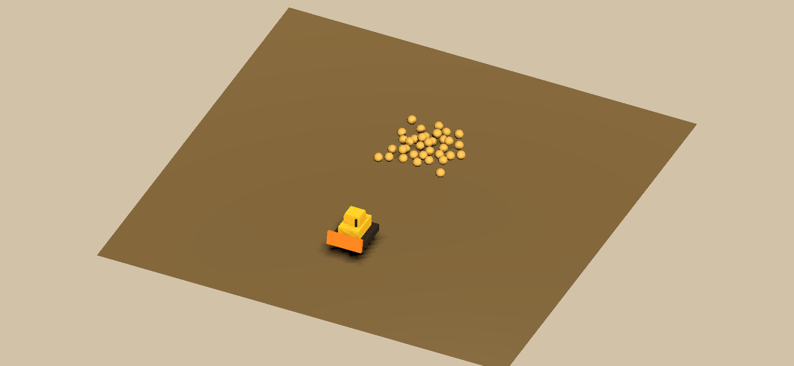
New standalone experiment: experiments/sand-push/. Separate project from Sandhaul — not merging in, not risking the main game. Tests whether "drive a bulldozer + push a sand pile around" is fun enough to become breather #2.
Phase 1 MVP shipped: drivable bulldozer (WASD or arrow keys — forward/back + steering), ball-pit sand (36 RigidBody3D spheres that settle into a pile via physics), the bulldozer's collision box nudges spheres on contact. No heightmap deformation yet — that's Phase 3 if this feels fun at ball-pit fidelity.
To try it: /Users/jamis/dev_sideprojects/tiny-game-dev-studio/experiments/sand-push/project.godot. Open in Godot, F5 to play, WASD or arrow keys to drive. Shove the ball pile around. Screenshot shows the starting state — sand already settled, bulldozer facing it.
The real question (answer after playing it)
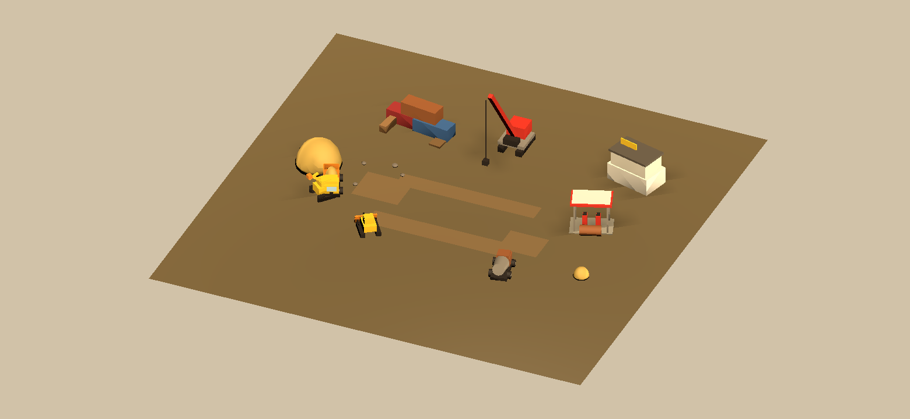
Big-ish medium pass (~90 min, /shape-bundled):
The MP4 captures the autonomous mode only (no simulated taps). To experience tap-to-load, run the project locally and tap/click during loading.
Review questions
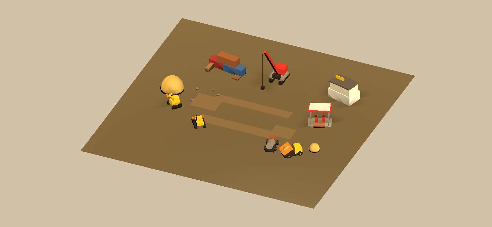
Medium pass (~30 min): Truck bed now tips up ~30° during the UNLOADING state — the iconic dump truck gesture. Bed pivots around its rear edge (sand "slides out the back"). Uses ease-out ramp up (first 20% of unload), hold at max (middle 60%), ease-out ramp down (last 20%). Cab and chassis stay level — only the bed tips, like a real dump truck. Refactored _make_dump_truck to group bed parts under a pivot Node3D; sand_fill is now a child of the bed so it tips along with it.
Review questions
Three wins this pass (Medium, ~40 min per /shape): (1) Sand piles A & B now use hemisphere meshes — proper heaped mounds, not pancakes. Pile A is tall (Y scale 1.5 × dome), pile B a smaller starter mound that grows. (2) Truck bed sand is also a hemisphere that bulges above the bed walls when full — heaping, not flat fill. (3) Per-trip deltas bumped: pile A shrinks -22% per load (was -8%), pile B grows +28% per unload (was +10%). Visible, drastic change every cycle. Auto-resets both piles together when pile B caps out.
Deferred per /shape (will re-pitch if payoff looks worth it): bed tip animation on unload, backhoe scoop animation on load.
Review questions
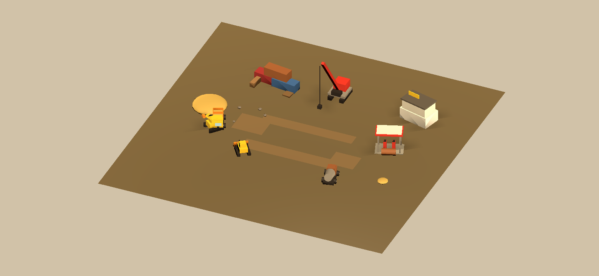
Two big changes shipped — /shape's Quick + Lite bundle (~70 min total):
Skipped per /shape's Lite scope: volume math (invisible to viewers), backhoe scoop animation, bed tip animation. Can layer on in follow-up passes if the core rhythm feels good.
Review questions
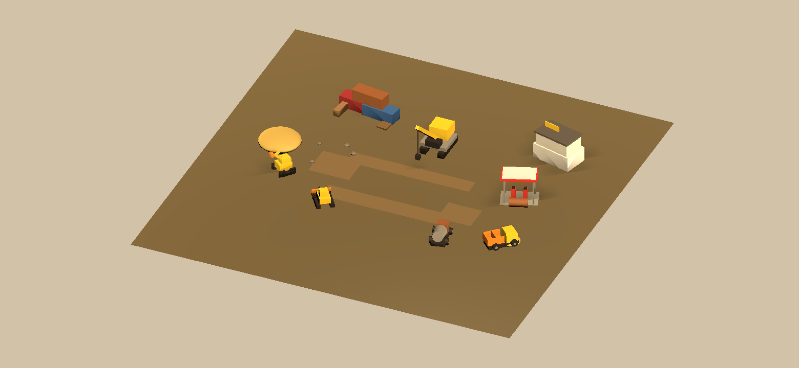
Three things shipped (lean Medium pass, ~30 min): (1) Timer-driven task flow — pile A shrinks and pile B grows over a 50-sec sine wave. No state machine, no truck loading animation — faked visually per "ship muscle" ethos. The video cycles through half the pile oscillation. (2) Crane scaled up 1.5× as the tall landmark. (3) Canvas spread again — stations now span 18×13 in a 28×28 ground plane. Camera bumped to 25 to fit, path re-routed to the wider layout.
Review questions
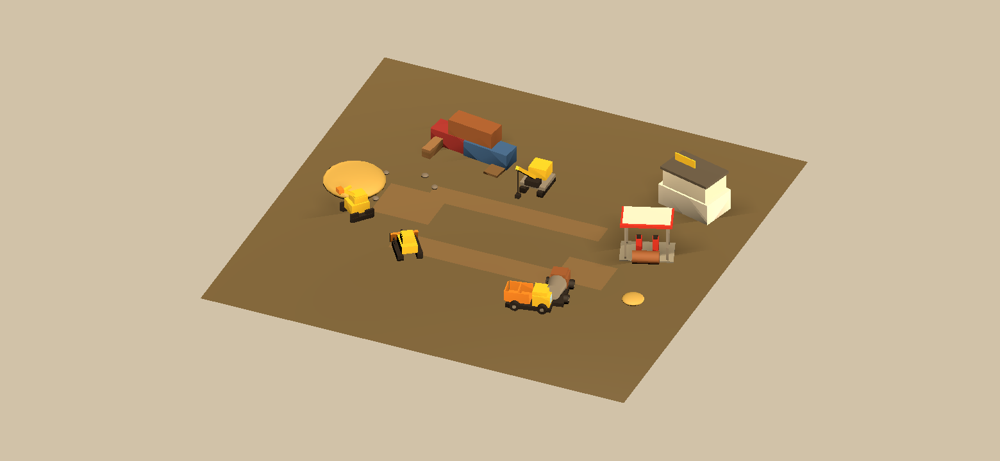
Two fixes shipped via new /shape skill (Quick + Medium, ~45 min total): (1) Truck was driving backwards — wrong yaw math; fixed by aligning the truck's local -Z (cab/front) with the path tangent using atan2(-t.x, -t.z). (2) Scene was using only ~60% of the canvas; spread stations into a 16×10 layout (piles at x=±8, back wall at z=-5.5). Crane moved to center-back as a prominent landmark. Camera bumped to cam 22 to fit. Path simplified from 14 waypoints to 12 with fewer sharp corners — smoother sweep through the widened site.
Review questions
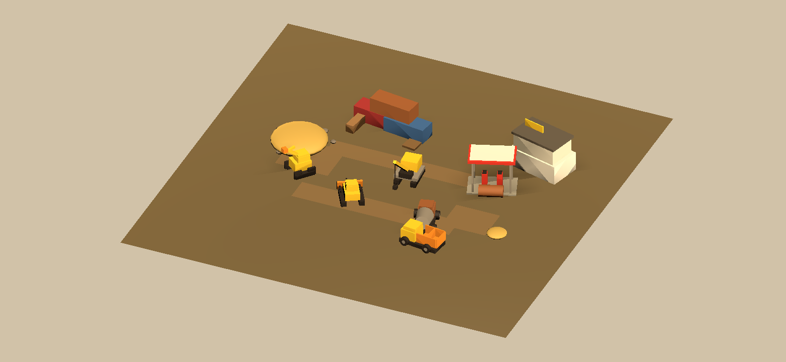
Applied 3 of 4 cozy-motion algorithms from the new brain playbook (knowledge/playbooks/vehicle-pathing.md): (1) heading slerp-lag — truck's yaw eases toward the path tangent over ~200ms instead of snapping, (2) curvature-based variable speed — truck slows to 55% on sharp turns, accelerates on straights (slow-in/fast-out Disney principle), (3) design-time path-clearance validation — sweeps the curve and warns about station near-passes (catches 5 intentional near-passes at pile A loading point — belong-together exception, not a bug). Body roll + collision detection deferred to next pass.
Review questions
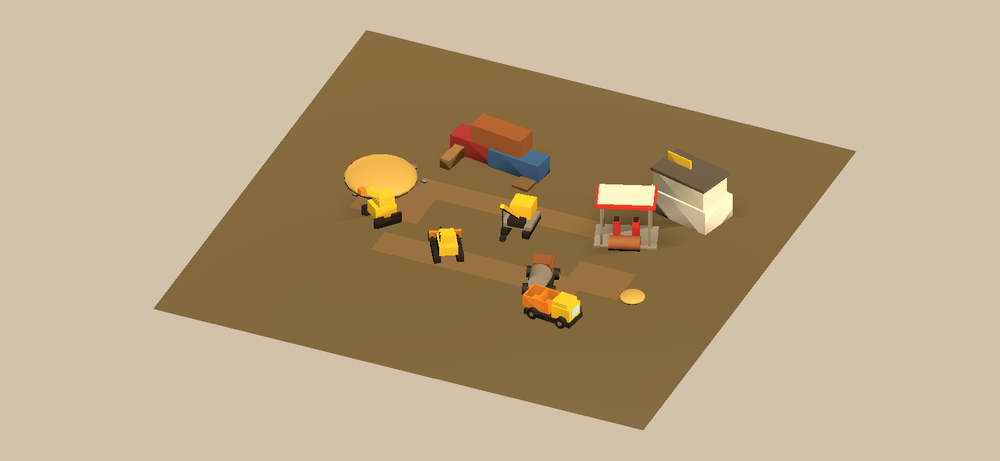
Applied env-designer's new 1.5× inter-station spacing rule. Scene now reads as zones with breathing room: DIG zone (pile A + backhoe, left), MID zone (bulldozer, crane, mixer), ADMIN zone (storage + HQ along back wall), SERVICE zone (fuel station, right). Camera bumped to cam 19 to fit wider layout. Path rerouted with 1.5-unit clearance from stations (but no real collision detection yet — that's the next pass).
Review questions
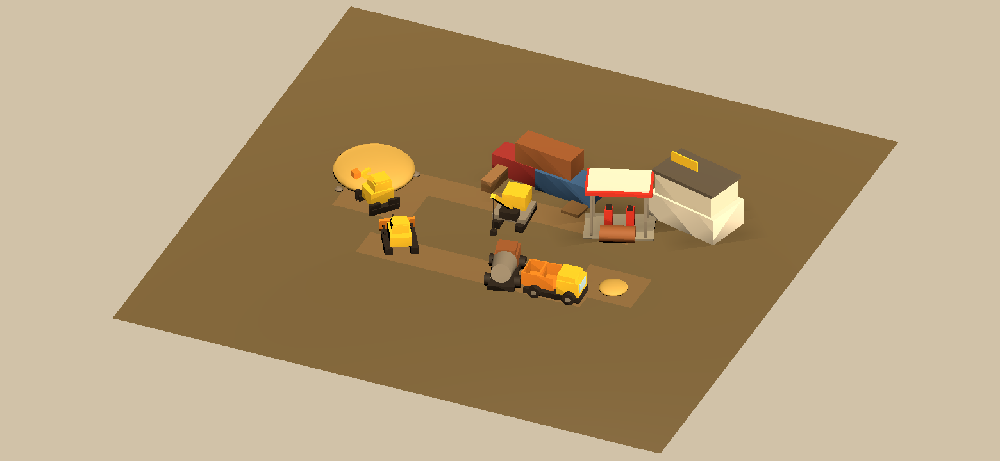
Full environment redesign — Goodnight Goodnight Construction Site vibe. Removed all grass, cones, barriers, porta-potty. Added: crane, cement mixer (tilted drum), bulldozer, storage yard (stacked containers + lumber), fuel station with canopy + pumps, bigger 2-story site HQ. Truck now follows a figure-8 Path3D loop through the whole site (14 sec per cycle) instead of A→B→A straight line.
Review questions
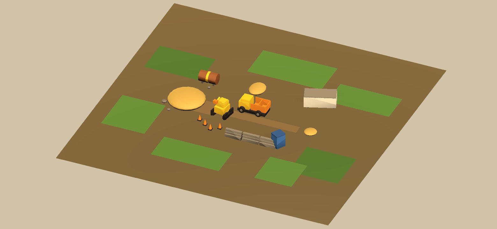
Experiment graduated into main sandhaul. Truck animates A→B→A on a ping-pong timer (7-sec one-way). Aspect switched to iPhone landscape 1560×720 for the 7-day App Store sprint. Left: static frame mid-trip. Right: 14-sec loop showing 2 full cycles.
Review questions
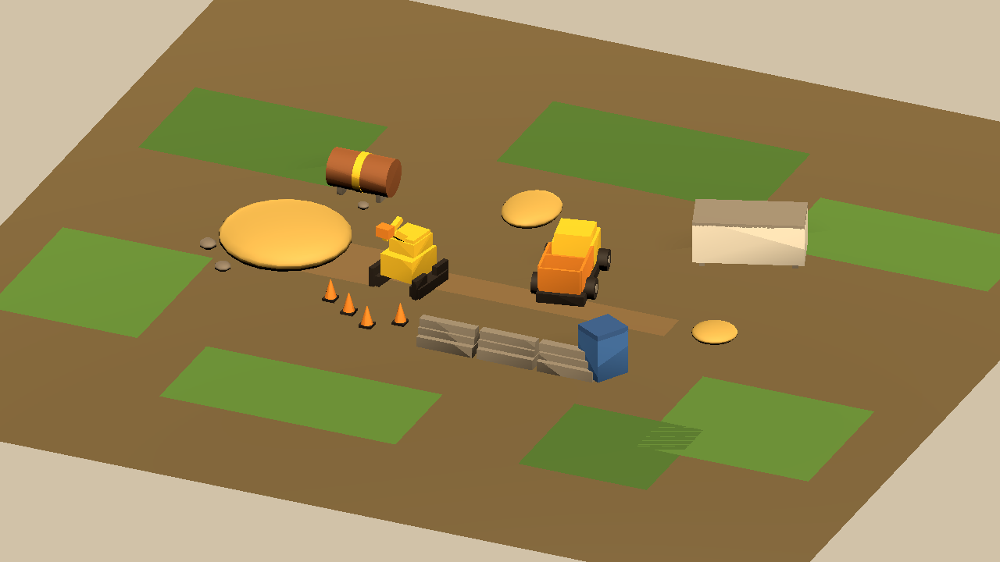
A — close (cam 12). Vehicles prominent, site dressing clear. Feels like crouching beside the site.
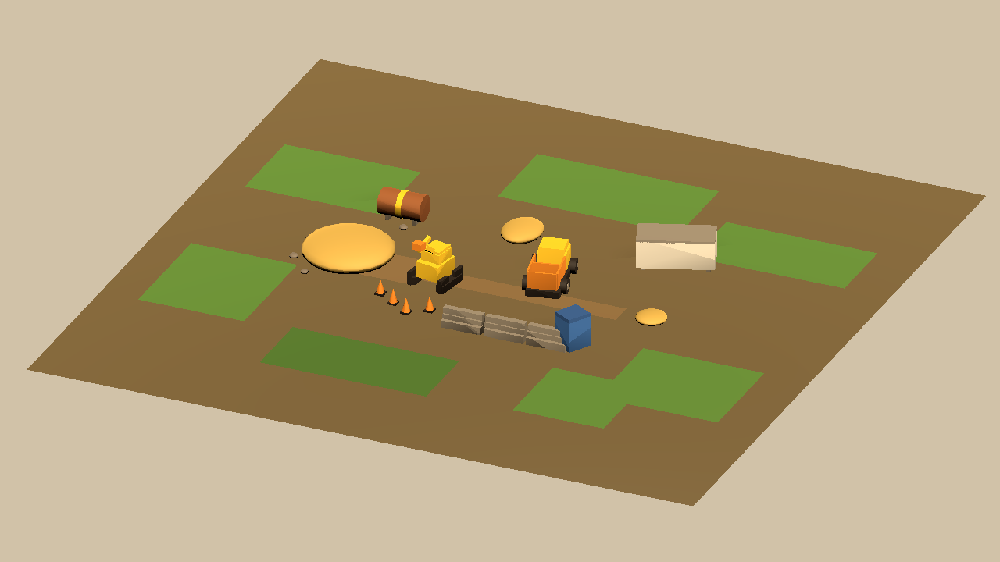
B — balanced (cam 17). Layout readable, vehicles still recognizable, terrain tells a story. Studio pick.
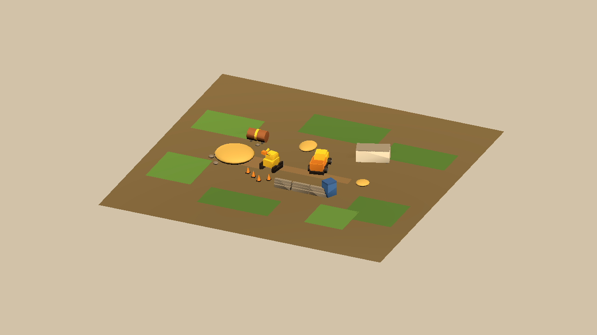
C — tiny (cam 24). Full train-set scale, everything miniature. Vehicles start to get lost.
Review questions
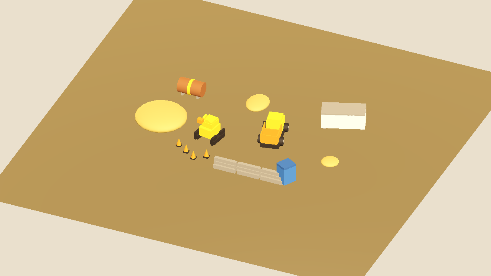
A — 35° tilt. Balanced isometric. Good layout read, a bit flat.
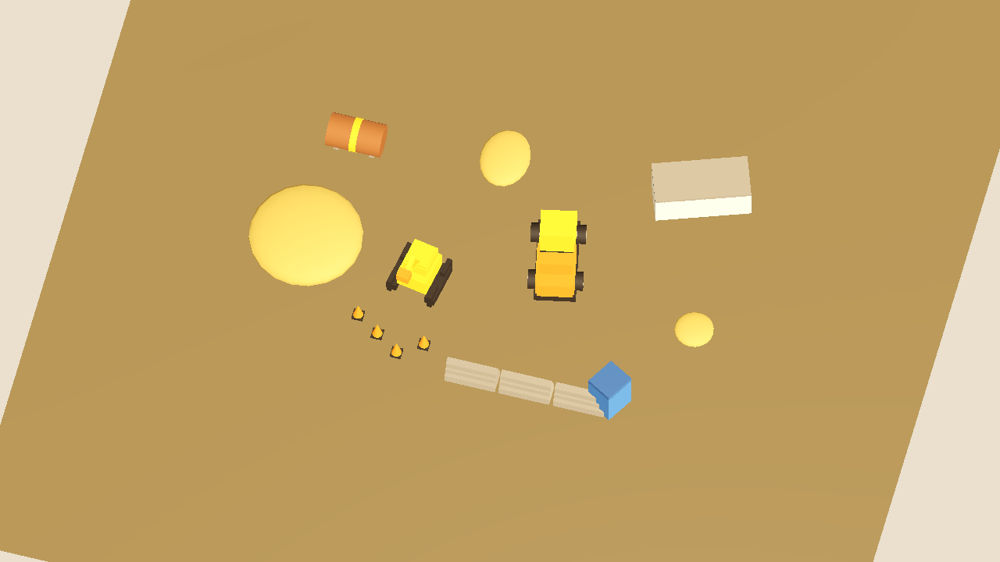
B — 55° tilt. More top-down. Loses depth, feels like a map.
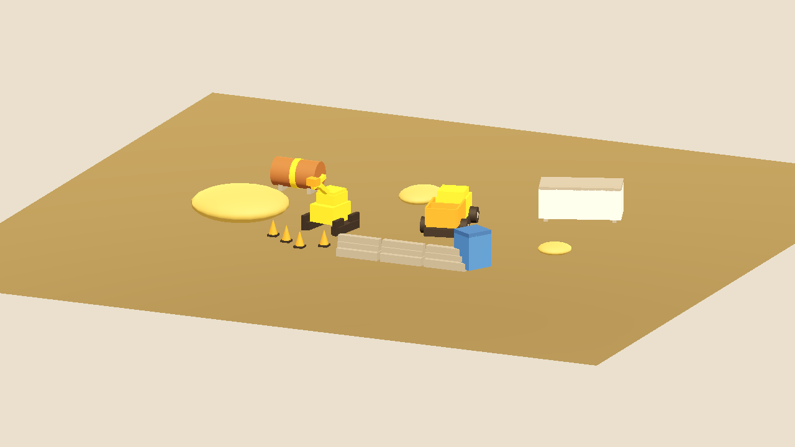
C — 20° tilt. Train-set eye level. Most diorama feel, vehicles have presence.
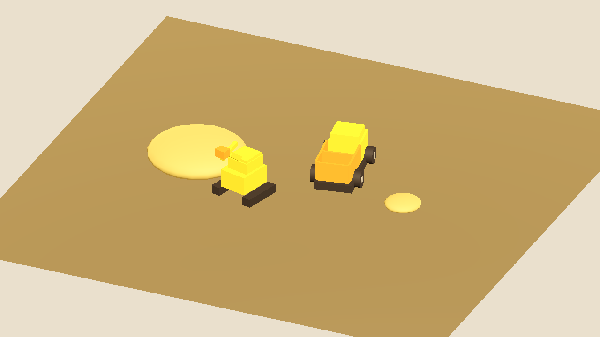
Proper vehicles + diorama angle. Dump truck (yellow/orange) + backhoe with arm. Sand piles are sphere meshes. Ground darkened for contrast.
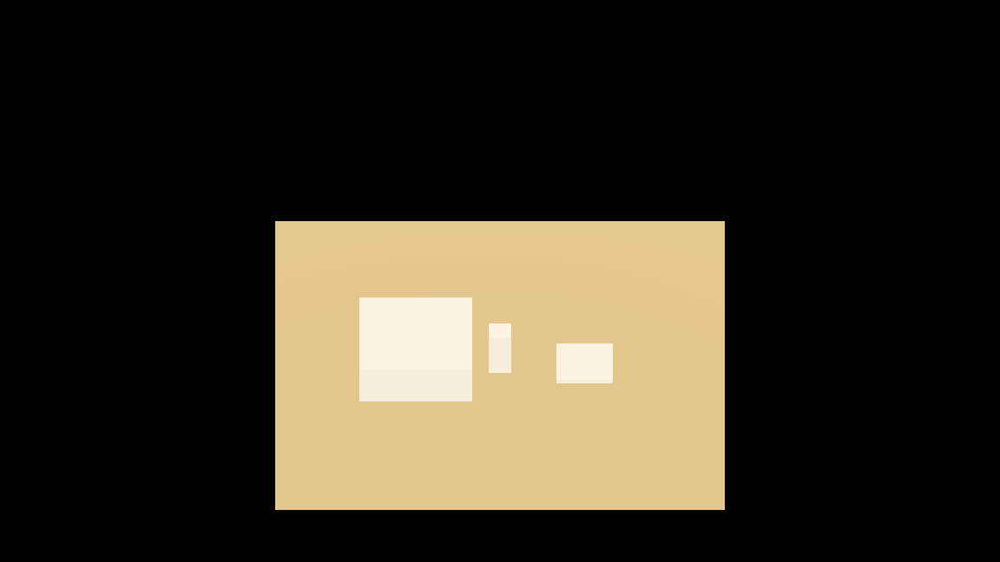
First render. Box proxies only — testing warm directional light and diorama camera angle before adding real models.